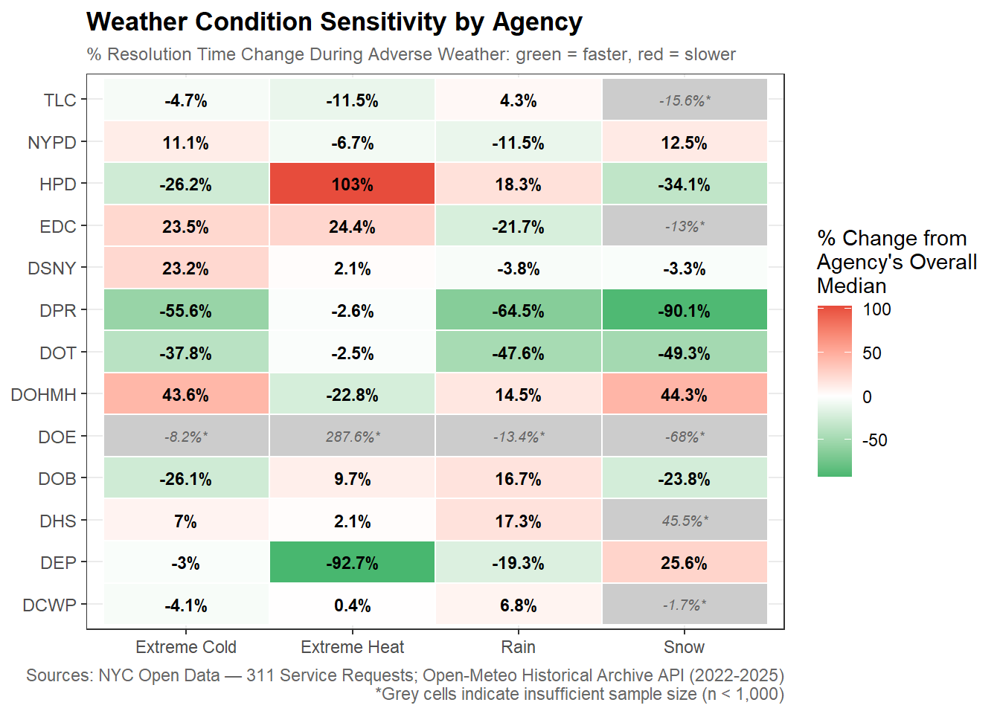
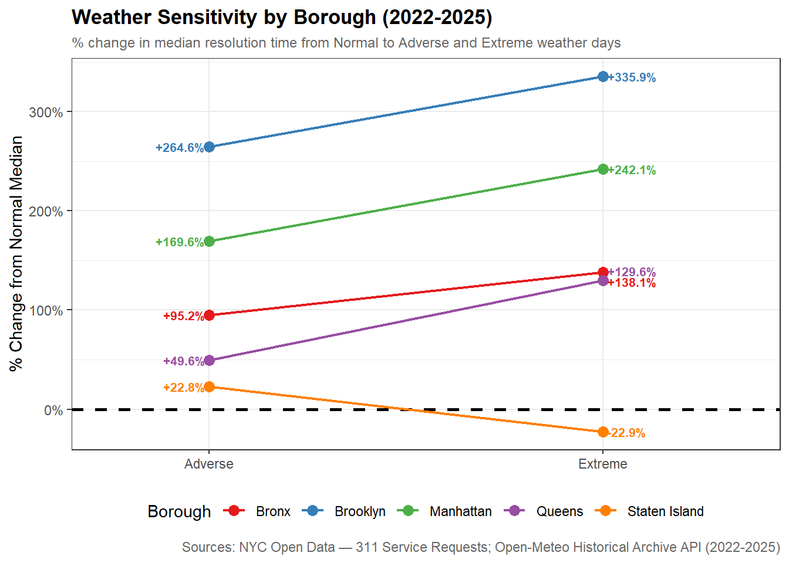
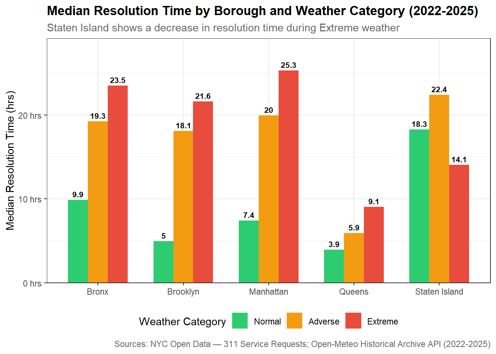
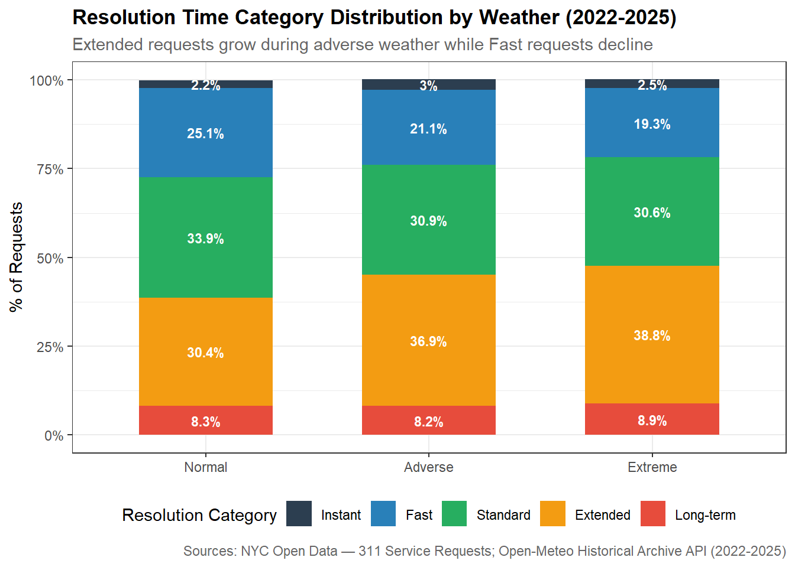
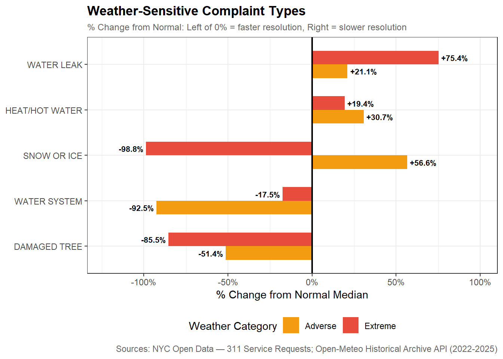

New York City’s 311 service fields 3-4 million requests each year from all five boroughs that cover a range of issues handled by the city’s numerous agencies. In recent years, the slow resolution times of certain responding agencies has come under fire leading to a closer examination of what could possibly take these issues so long to resolve. While much high level work has been done around the basic statistical makeup of 311 service requests, what has been missing is a deeper look into the contributing factors of long resolution times. As part of a larger analysis into what factors drive 311 service request response and resolution times, I will explore the possible effect that weather may have on 311 service request response times across city agencies. The essential question I’m seeking to answer is How do weather conditions impact response time across agencies?
My meteorological research angle is unique from the other factors explored in the main report in that it is largely the only truly unpredictable factor that is outside of human control quite unlike agency administration or resident income level. Using 311 service request data from NYC OpenData and historical weather data from Open-Meteo from 2022-2025, I will analyze if and how adverse weather such as high precipitation, snow, or extreme heat/cold can affect the composition of complaints lodged and how fast agencies respond to service requests. I will further drill in at the borough level to see if there are any significant differences in response time across boroughs to take into account that different borough geographies may experience adverse weather differently (eg Park Slope experiences flooding more than the higher elevated Washington Heights).
Data Sources
For this analysis, I joined two data sets spatially by latitude and longitude coordinates:
NYC OpenData: 311 Service Requests from 2020 to Present
Main repository of inbound 311 Service Requests with key request details for analysis: creation/closure date, issue type and details, responding agency, latitude/longitude coordinates.
For 2022-2025, there were ~13M service request records
Although very detailed, the volume of data and missing fields can pose data preparation and cleaning issues.
Open-Meteo
API that provides historical weather data from National Weather Service.
Reliable and accurate data with various measures of precipitation and temperature. The meticulous level of detail can help ensure our weather assessments aren’t too broad.
Will help assess weather conditions for each day of analysis.
Data Acquisition & Preparation
Display Code
## Read the pre-processed parquet files produced by fetch_data.R# Weather data: 23,376 rows (16 points across 5 boroughs x 1,461 days)weather <-read_parquet("data/individual/weather/weather_clean.parquet")# Clean 311 data: ~13M rows, may take a moment to loadnyc_311 <-read_parquet("data/individual/nyc_311_clean.parquet")# Joined dataset: 311 requests with weather datanyc_311_with_weather <-read_parquet("data/individual/nyc_311_with_weather.parquet")
Data Acquisition
Created a separate script that is run once manually to download and cache all data into parquet files. Due to high volume of 311 data (~13 million rows), the initial fetch takes around 40 minutes and caching helps prevent running and downloading this data from square one every time a change is made. The parquet files produced sit on disk and this report will just read them in order to perform analysis.
I chose to use parquet over CSV because CSV files would process slowly and be memory-inefficient as it offers no compression. Parquet, a binary file format designed specifically for large tabular data sets, is a better choice for this particular project. Parquet compression makes file sizes significantly smaller and it preserves data types directly provided by the source API, which means the 13 million row data set loads much faster and uses significantly less memory.
Every time fetch_data.R runs, before making any API call it checks whether the output file already exists on disk.
If the file is already there, the function exits immediately and skips the download entirely. If it isn’t there, it proceeds with the fetch. This applies at two levels:
Page level — each of the 264+ individual API pages is saved immediately as its own parquet file the moment it downloads. If the session crashes on page 200, re-running picks up from page 201 rather than starting over File level — once the final clean parquet files exist, the entire fetch is skipped on every subsequent run
the report can be rendered repeatedly and quickly — it just reads the finished parquet files from disk. The expensive data acquisition work only ever happens once, and the results are preserved indefinitely until you deliberately delete the cached files to force a refresh. persistent cache decouples data acquisition from report rendering
Note on Excluded Records after Join: Joining on if there is a borough and lat/long coords
193,283 records are missing both lat and lon — these are the records with no coordinates at all. Lat and lon are always missing together, never one without the other, which makes sense — if a request has no location it has neither coordinate. 196,803 unmatched in the joined dataset — the difference of 3,520 between this and the 193,283 missing coordinates accounts for records that have coordinates but whose borough was NA, so they were excluded from the spatial lookup in Step 1. 1.46% of all records have no coordinates — a small but meaningful fraction. These are typically requests submitted by phone where the caller didn’t provide a specific address, or agency-generated requests without a precise location.
13,002,701 records (98.54%) have valid coordinates and can be spatially matched 193,283 records (1.46%) have no coordinates and will receive NA weather fields 13,195,984 total — all records accounted for
phone-submitted requests often don’t have precise location data
Snapshot of Data Acquired
NoteAcquired Data Snapshot
13,195,984 service request records acquired from NYC OpenData, 23,376 from Open-Meteo (16 weather points x 1,461 days)
193,283 (1.46%) 311 records lacked geographic coordinates and could not be matched to a weather point.
Of all records, 12,999,181 (98.51%) were successfully matched to a weather point.
The 311 data set spans 2022-01-01 to 2025-12-31 and only records that were marked as closed service requests were selected.
The median resolution time across all requests was 7.11 hours.
ImportantLimitations in Analysis
Limitations in Analysis
Data Limitations
193,283 records (1.46%) missing coordinates could not be spatially matched to weather data and receive NA weather fields
16 weather coordinate points represent borough-level conditions but cannot capture hyper-local microclimate variation within boroughs
Weather data is daily resolution — hourly weather events like afternoon thunderstorms or overnight cold snaps are averaged into daily summaries, potentially obscuring short-duration but high-impact weather events
Open-Meteo uses ERA5 reanalysis model rather than direct station readings — modeled estimates rather than observed measurements
Methodological Limitations
Resolution time is used as a proxy for service quality — a closed request does not necessarily mean the issue was resolved satisfactorily
Sub-1-minute closures (316,472 records / 2.4%) likely represent automated or duplicate closures rather than genuine resolutions — their inclusion may affect agency-level averages
temp_min_f used for cold weather classification captures overnight lows which drive infrastructure stress but may not reflect daytime conditions experienced by residents
One weather coordinate per borough subregion — future nearest-neighbor upgrade with denser coordinates would improve spatial precision
Analysis is correlational — weather conditions are associated with resolution time changes but causation cannot be established from observational data alone
Scope Limitations
Four year window (2022-2025) may not capture longer-term seasonal patterns or anomalous weather years
Borough is the finest geographic unit for weather matching — community district and neighborhood level variation in both weather and service delivery is not captured
EDA: NYC 311 Requests & Weather in NYC
Weather Patterns in NYC (2022–2025)
Adverse and Extreme Weather Days by Borough
Display Code
# Bar chart or table: count of Normal/Adverse/Extreme days per borough# Use plotly for interactivity# Count of days per weather category per borough# Aggregated to borough level using the most common weather category# across all points within the borough on each dayweather_category_by_borough <- weather |>group_by(borough, date) |>summarise(# Most common category across all points in the borough that dayweather_category =names(which.max(table(weather_category))),.groups ="drop" ) |>mutate(weather_category =factor(weather_category,levels =c("Normal", "Adverse", "Extreme"),ordered =TRUE) ) |>count(borough, weather_category)# Stacked bar chart: count of Normal/Adverse/Extreme days by boroughweather_conditions_by_borough <-ggplot(weather_category_by_borough,aes(x = borough, y = n, fill = weather_category)) +geom_col(width =0.6) +# Labels for Normal and Adverse — centered inside their segmentsgeom_text(data = weather_category_by_borough |>filter(weather_category !="Extreme"),aes(label =comma(n)),position =position_stack(vjust =0.5),size =3,color ="white",fontface ="bold" ) +# Label for Extreme — positioned above the full bargeom_text(data = weather_category_by_borough |>filter(weather_category =="Extreme"),aes(label =paste0("Extreme: ", comma(n)),y =0),vjust =1.0,size =2.5,color ="#e74c3c",fontface ="bold" ) +scale_fill_manual(values =c(Normal ="#2ecc71",Adverse ="#f39c12",Extreme ="#e74c3c"),name ="Weather Category" ) +scale_y_continuous(labels = comma) +labs(title ="Weather Conditions by Borough (2022-2025)",subtitle ="Number of days classified as Normal, Adverse, or Extreme",x =NULL,y ="Number of Days" ) +theme_bw() +theme(legend.position ="bottom",plot.title =element_text(face ="bold"),plot.subtitle =element_text(color ="gray40") )weather_conditions_by_borough
Normal weather days dominate across all 5 boroughs as expected. The Bronx and Manhattan experienced the most Adverse days and Staten Island experienced the fewest. Extreme days are rare.
Temperature Trends
Display Code
# Time series: daily avg temperature by borough over 2022-2025# Annotate notable extreme heat and cold periods# Aggregate daily temperature to borough level by averaging across all# weather points within each borough, then compute weekly averagesweather_temp_weekly <- weather |># Step 1: average across points within each borough for each daygroup_by(borough, date) |>summarise(daily_avg_temp =mean(temp_avg_f, na.rm =TRUE),.groups ="drop" ) |># Step 2: aggregate daily values to weekly averages# floor_date() rounds down to the nearest Sunday for each datemutate(week =floor_date(date, "week")) |>group_by(borough, week) |>summarise(weekly_avg_temp =mean(daily_avg_temp, na.rm =TRUE),.groups ="drop" ) |># Step 3: extract year from week for faceting by year# filter removes the 2021-12-26 week that floor_date() creates# when rounding down dates in the first week of January 2022mutate(year =year(week)) |>filter(year >=2022)# Line chart: weekly average temperature by borough faceted by year# Each panel shows one year allowing clear comparison of seasonal patternsweather_temp_trends <-ggplot( weather_temp_weekly,aes(x = week, y = weekly_avg_temp, color = borough)) +geom_line(linewidth =0.7, alpha =0.8) +scale_color_brewer(palette ="Set1", name ="Borough") +# Show month abbreviations on x axis — free_x allows each facet# to have its own x axis scaled to that year's date rangescale_x_date(date_breaks ="2 months",date_labels ="%b" ) +scale_y_continuous(labels = \(x) paste0(x, "°F")) +# Arrange four years in a 2x2 gridfacet_wrap(~ year, scales ="free_x", ncol =2) +labs(title ="Weekly Average Temperature by Borough (2022-2025)",subtitle ="Average of daily mean temperatures across all weather points per borough",x =NULL,y ="Average Temperature (°F)" ) +theme_bw() +theme(legend.position ="bottom",plot.title =element_text(face ="bold"),plot.subtitle =element_text(color ="gray40"),axis.text.x =element_text(angle =45, hjust =1) )weather_temp_trends
The near-identical lines show that temperature is consistent across boroughs with no major variability across boroughs as far as average temperature goes.
Precipitation and Snowfall
Display Code
# Showing by borough to highlight possible coastal vs inland differences# Check variability of precipitation and snowfall across boroughsweather |>group_by(borough) |>summarise(mean_precip =mean(precip_in, na.rm =TRUE),mean_snow =mean(snowfall_in, na.rm =TRUE),total_precip =sum(precip_in, na.rm =TRUE),total_snow =sum(snowfall_in, na.rm =TRUE) )
Display Code
# Aggregate daily precipitation and snowfall to NYC-wide monthly totals# Step 1: average across all 16 weather points for each day to get a single city-wide daily value, correcting for Queens having 4 points vs 3 for other boroughs# Step 2: sum daily values to monthly totalsweather_precip_monthly <- weather |># Step 1: average across all points for each daygroup_by(date) |>summarise(daily_precip =mean(precip_in, na.rm =TRUE),daily_snow =mean(snowfall_in, na.rm =TRUE),.groups ="drop" ) |># Step 2: aggregate to monthly totalsmutate(month =floor_date(date, "month")) |>group_by(month) |>summarise(total_precip =sum(daily_precip, na.rm =TRUE),total_snow =sum(daily_snow, na.rm =TRUE),.groups ="drop" )# Pivot to long format for faceted visualization to allow ggplot to facet by variable (precipitation vs snowfall) while sharing the same x axisweather_precip_long <- weather_precip_monthly |>pivot_longer(cols =c(total_precip, total_snow),names_to ="variable",values_to ="inches" ) |>mutate(# Clean up variable labels for facet titlesvariable =recode(variable,total_precip ="Precipitation (in)",total_snow ="Snowfall (in)") )# Stacked panel chart: monthly precipitation and snowfall (2022-2025)# Two panels share the same x axis — precipitation on top, snowfall on bottomweather_precip_snow <-ggplot(weather_precip_long,aes(x = month, y = inches, fill = variable)) +geom_col(width =25, show.legend =FALSE) +scale_fill_manual(values =c("Precipitation (in)"="#3498db","Snowfall (in)"="#85c1e9" ) ) +scale_x_date(date_breaks ="6 months",date_labels ="%b %Y" ) +scale_y_continuous(labels = \(x) paste0(x, '"')) +facet_wrap(~ variable, ncol =1, scales ="free_y") +labs(title ="Monthly Precipitation and Snowfall in NYC (2022-2025)",subtitle ="NYC-wide average across all 16 weather points",x =NULL,y ="Inches" ) +theme_bw() +theme(plot.title =element_text(face ="bold"),plot.subtitle =element_text(color ="gray40"),axis.text.x =element_text(angle =45, hjust =1),strip.text =element_text(face ="bold") )weather_precip_snow
Precipitation:
October 2022 stands out as an unusually wet month - storm/hurricane?
2023 was the wettest year across all boroughs while 2025 appears to be the driest
Borough differences are minimal with roughly 1-2 inches variation in any given year
Snowfall:
2023 had dramatically less snow than other years across all boroughs
Staten Island consistently gets less snow than the other boroughs
2022 and 2025 were the snowiest years (January 2022 had the highest snowfall of the entire period and Late 2025 shows a notable snowfall spike earlier in year)
Weather Event Calendar
Hover over calendar for more detailed borough weather information by month and year
Display Code
# Heatmap: weather category by day of year, faceted by year# Shows seasonality of adverse/extreme weather events# Aggregate daily weather categories to monthly proportions per borough# For each borough-month combination, calculate the proportion of days# that were classified as Adverse or Extremeweather_heatmap <- weather |># Step 1: get one category per borough per day using most common methodgroup_by(borough, date) |>summarise(weather_category =names(which.max(table(weather_category))),.groups ="drop" ) |># Step 2: aggregate to monthly proportions per boroughmutate(month =floor_date(date, "month")) |>group_by(borough, month) |>summarise(n_days =n(),n_adverse =sum(weather_category =="Adverse"),n_extreme =sum(weather_category =="Extreme"),pct_adverse =mean(weather_category %in%c("Adverse", "Extreme")) *100,.groups ="drop" )# # Monthly heatmap: proportion of adverse/extreme days by borough# weather_adverse_heatmap <- ggplot(weather_heatmap,# aes(x = month, y = borough, fill = pct_adverse)) +# geom_tile(color = "white", linewidth = 0.3) +# scale_fill_gradient(# low = "#ffffff",# high = "#e74c3c",# name = "% Adverse/\nExtreme Days"# ) +# scale_x_date(# date_breaks = "3 months",# date_labels = "%b %Y"# ) +# labs(# title = "Monthly Adverse & Extreme Weather Days by Borough (2022-2025)",# subtitle = "Percentage of days per month classified as Adverse or Extreme",# x = NULL,# y = NULL# ) +# theme_bw() +# theme(# plot.title = element_text(face = "bold"),# plot.subtitle = element_text(color = "gray40"),# axis.text.x = element_text(angle = 45, hjust = 1),# legend.position = "right"# )# # weather_adverse_heatmap# Monthly heatmap: proportion of adverse/extreme days by boroughweather_adverse_heatmap <-ggplot(weather_heatmap,aes(x = month, y = borough, fill = pct_adverse,text =paste0("Borough: ", borough, "\n","Month: ", format(month, "%B %Y"), "\n","Adverse Days: ", n_adverse, "\n","Extreme Days: ", n_extreme, "\n","Total Days: ", n_days, "\n","% Adverse/Extreme: ", round(pct_adverse, 1), "%" ))) +geom_tile(color ="white", linewidth =0.3) +scale_fill_gradient(low ="#ffffff",high ="#e74c3c",name ="% Adverse/\nExtreme Days" ) +scale_x_date(date_breaks ="3 months",date_labels ="%b %Y" ) +labs(title ="Monthly Adverse & Extreme Weather Days by Borough (2022-2025)",subtitle ="Percentage of days per month classified as Adverse or Extreme",x =NULL,y =NULL ) +theme_bw() +theme(plot.title =element_text(face ="bold"),plot.subtitle =element_text(color ="gray40"),axis.text.x =element_text(angle =45, hjust =1),legend.position ="right" )# Convert to interactive plotly chart with custom tooltipggplotly(weather_adverse_heatmap, tooltip ="text")
Winter months (Jan/Feb) show the darkest reds across all boroughs indicating high proportion of adverse/extreme days driven by cold temperatures
January 2022 Bronx shows 77% adverse/extreme days a very cold January which matches our earlier findings
Summer months show lighter colors with some mid-range reds in July/August indicating heat events
July and August 2022 have highest percentage of adverse days likely due to heat events (32%)
Patterns are consistent across boroughs which reinforces our earlier finding that weather conditions don’t vary dramatically between boroughs
311 Service Request Overview
Request Volume
Display Code
# Bar chart: total requests by borough and year# Use plotly for interactivity# Count of 311 requests by yearrequests_by_year <- nyc_311 |>mutate(year =year(date)) |>count(year)# Line chart: total 311 service requests by yearrequests_by_year_chart <-ggplot(requests_by_year,aes(x = year, y = n)) +geom_line(color ="#3498db", linewidth =1) +geom_point(color ="#3498db", size =3) +geom_text(aes(label =comma(n),hjust =ifelse(year ==2022, -0.1, 0.5)),vjust =-1,size =3.5,fontface ="bold" ) +scale_x_continuous(breaks =c(2022, 2023, 2024, 2025)) +scale_y_continuous(labels = comma,expand =expansion(mult =c(0.05, 0.1)) ) +labs(title ="NYC 311 Service Requests by Year (2022-2025)",subtitle ="Total closed service requests per year",x =NULL,y ="Number of Requests" ) +theme_bw() +theme(plot.title =element_text(face ="bold"),plot.subtitle =element_text(color ="gray40") )requests_by_year_chart
Display Code
requests_by_year_borough <- nyc_311 |>mutate(year =year(date)) |>count(year, borough) |>filter(!is.na(borough))# Net growth of 311 requests by borough from 2022 to 2025requests_growth <- requests_by_year_borough |>filter(year %in%c(2022, 2025)) |>pivot_wider(names_from = year, values_from = n, names_prefix ="year_") |>mutate(net_growth = year_2025 - year_2022,pct_growth =round((year_2025 - year_2022) / year_2022 *100, 1) ) |>arrange(desc(pct_growth))# Horizontal bar chart: net growth of 311 requests by borough (2022-2025)requests_growth_chart <-ggplot(requests_growth,aes(x = pct_growth, y =reorder(borough, pct_growth))) +geom_col(fill ="#3498db", width =0.6) +geom_text(aes(label =paste0(pct_growth, "%")),hjust =-0.2,size =3.5,fontface ="bold" ) +scale_x_continuous(labels = \(x) paste0(x, "%"),expand =expansion(mult =c(0, 0.15)) ) +labs(title ="Net Growth in 311 Service Requests by Borough (2022-2025)",subtitle ="Percentage increase in closed service requests from 2022 to 2025",x ="Percentage Growth",y =NULL ) +theme_bw() +theme(plot.title =element_text(face ="bold"),plot.subtitle =element_text(color ="gray40") )requests_growth_chart
Brooklyn consistently has the highest volume of requests and has shown consistent year over year growth
Staten Island the lowest (and relatively flat growth across all four years)
Manhattan Shows steady but modest growth from 618,835 in 2022 to 703,589 in 2025 — about 14% increase over the period (2022 was notably lower)
Queens Shows the strongest and most consistent growth of any borough — from 703,600 in 2022 to 850,735 in 2025, a 21% increase over the period. Queens surpassed Manhattan in every year despite having a comparable population, which is interesting given that Manhattan is the most densely populated borough. The gap between Queens and Manhattan widens each year suggesting Queens residents are increasingly engaging with 311
Brooklyn, Queens, and the Bronx are all growing faster than Manhattan and Staten Island
Top Complaint Types and Agencies
Top Complaints
Display Code
# Horizontal bar chart: top 20 complaint types# Highlight weather-sensitive types in a different color# Normalize complaint types to uppercase to catch all casing duplicates# then aggregate counts and find top 2 agencies for each typetop_complaint_types <- nyc_311 |>mutate(complaint_type =str_to_upper(str_trim(complaint_type))) |>count(complaint_type, sort =TRUE) |>slice_head(n =15)# For each of the top 15 complaint types, find the top 2 responding agenciestop_complaint_agencies <- nyc_311 |>mutate(complaint_type =str_to_upper(str_trim(complaint_type))) |>filter(complaint_type %in% top_complaint_types$complaint_type) |>count(complaint_type, agency, sort =TRUE) |>group_by(complaint_type) |>slice_head(n =2) |>summarise(top_agencies =paste(agency, collapse ="/"),.groups ="drop" )# Join complaint counts with top agency labelstop_complaints_with_agencies <- top_complaint_types |>left_join(top_complaint_agencies, by ="complaint_type")# Extract primary agency for color filltop_complaints_with_agencies <- top_complaints_with_agencies |>mutate(primary_agency =str_extract(top_agencies, "^[^/]+"),# Reorder by count for horizontal bar chartcomplaint_type =fct_reorder(complaint_type, n) )# Define color palette for agenciesagency_colors <-c("NYPD"="#2980b9","HPD"="#e74c3c","DOT"="#27ae60","DEP"="#8e44ad","DSNY"="#f39c12","DOB"="#16a085")# Horizontal bar chart: top 15 complaint types colored by primary agency# with top 2 agencies labeled on each bartop_complaints_chart <-ggplot(top_complaints_with_agencies,aes(x = n, y = complaint_type, fill = primary_agency)) +geom_col(width =0.7) +geom_text(aes(label =paste0(top_agencies, " ")),hjust =1,size =3,color ="white",fontface ="bold" ) +scale_fill_manual(values = agency_colors, name ="Primary Agency") +scale_x_continuous(labels = comma) +labs(title ="Top 15 NYC 311 Complaint Types (2022-2025)",subtitle ="And their primary responding agency",x ="Number of Requests",y =NULL ) +theme_bw() +theme(plot.title =element_text(face ="bold"),plot.subtitle =element_text(color ="gray40"),legend.position ="bottom" )top_complaints_chart
Top Responding Agencies
Display Code
# Bar chart: top 10 agencies by request volume# Count of 311 requests by agency, normalized to uppercase to catch# any casing inconsistencies, top 10 by volumen_total_requests <-nrow(nyc_311)top_agencies <- nyc_311 |>mutate(agency_name =str_to_upper(str_trim(agency_name))) |>count(agency_name, sort =TRUE) |>slice_head(n =10) |>mutate(# Percentage of all 13.2M requests handled by each agencypct_total =round(n / n_total_requests *100, 1),agency_name =fct_reorder(agency_name, n) )# GT table: top 10 responding agencies by request volumetop_agencies_table <- top_agencies |>arrange(desc(n)) |>select(agency_name, n, pct_total) |>mutate(# Convert agency names from uppercase to title case for readabilityagency_name =str_to_title(str_to_lower(agency_name)) ) |>gt() |>tab_header(title ="Top 10 Responding Agencies by 311 Request Volume (2022-2025)",subtitle ="Total closed service requests per agency" ) |>cols_label(agency_name ="Agency",n ="Requests",pct_total ="% of Total" ) |>fmt_number(columns = n, decimals =0) |>fmt_number(columns = pct_total, decimals =1, suffix ="%") |>cols_align(align ="left", columns = agency_name) |>cols_align(align ="right", columns =c(n, pct_total)) |>tab_style(style =cell_text(weight ="bold"),locations =cells_column_labels() ) |>tab_style(style =cell_fill(color ="#f2f2f2"),locations =cells_body(rows =seq(1, 10, by =2)) )top_agencies_table
Top 10 Responding Agencies by 311 Request Volume (2022-2025)
Total closed service requests per agency
Agency
Requests
% of Total
New York City Police Department
6,040,445
45.8
Department Of Housing Preservation And Development
2,841,133
21.5
Department Of Sanitation
1,229,080
9.3
Department Of Transportation
818,500
6.2
Department Of Environmental Protection
719,679
5.5
Department Of Parks And Recreation
407,798
3.1
Department Of Buildings
386,921
2.9
Department Of Health And Mental Hygiene
314,027
2.4
Department Of Homeless Services
142,713
1.1
Taxi And Limousine Commission
121,113
0.9
Resolution Time Distribution
Display Code
# Histogram or density plot of resolution times (log scale)# Annotate the median and key percentiles# Resolution time distribution data# Version 1: all records excluding exact zeros (log scale requires > 0)resolution_dist_all <- nyc_311 |>filter(resolution_hrs >0) |>select(resolution_hrs)# Resolution time categories# Applied to full dataset including instant closuresresolution_categories <- nyc_311 |>mutate(resolution_category =case_when( resolution_hrs <0.017~"Instant", resolution_hrs <1~"Fast", resolution_hrs <24~"Standard", resolution_hrs <720~"Extended",TRUE~"Long-term" ) |>factor(levels =c("Instant", "Fast", "Standard","Extended", "Long-term"),ordered =TRUE) ) |>count(resolution_category) |>mutate(pct =round(n /sum(n) *100, 1))# Density plot: resolution time distribution on log scaleresolution_density <-ggplot(resolution_dist_all,aes(x = resolution_hrs)) +geom_density(color ="#3498db",linewidth =0.8 ) +scale_x_log10(labels = \(x) case_when( x <1~paste0(round(x *60), "m"), x <24~paste0(round(x), "h"), x <720~paste0(round(x /24), "d"),TRUE~paste0(round(x /720), "mo") ),breaks =c(0.017, 0.25, 1, 6, 24, 168, 720, 4380, 17520) ) +labs(title ="Distribution of 311 Service Request Resolution Times (2022-2025)",subtitle ="Log scale — two peaks visible at ~1 hour and ~1-2 days",x ="Resolution Time",y ="Density",caption ="Source: NYC Open Data — 311 Service Requests (2022-2025)" ) +theme_bw() +theme(plot.title =element_text(face ="bold"),plot.subtitle =element_text(color ="gray40"),plot.caption =element_text(color ="gray40") )resolution_density
Display Code
# GT table: percentage of requests by resolution time categoryresolution_categories_table <- resolution_categories |>mutate(resolution_category =as.character(resolution_category)) |>gt() |>tab_header(title ="311 Service Requests by Resolution Time Category (2022-2025)",subtitle ="Distribution of closed service requests across resolution time categories" ) |>cols_label(resolution_category ="Resolution Category",n ="Requests",pct ="% of Total" ) |>fmt_number(columns = n, decimals =0) |>fmt_number(columns = pct, decimals =1, suffix ="%") |>cols_align(align ="left", columns = resolution_category) |>cols_align(align ="right", columns =c(n, pct)) |>tab_style(style =cell_text(weight ="bold"),locations =cells_column_labels() ) |>tab_style(style =cell_fill(color ="#f2f2f2"),locations =cells_body(rows =seq(1, 5, by =2)) ) |>tab_source_note(source_note ="Source: NYC Open Data — 311 Service Requests (2022-2025)" )resolution_categories_table
311 Service Requests by Resolution Time Category (2022-2025)
Distribution of closed service requests across resolution time categories
Resolution Category
Requests
% of Total
Instant
316,472
2.4
Fast
3,204,422
24.3
Standard
4,420,194
33.5
Extended
4,168,833
31.6
Long-term
1,086,063
8.2
Source: NYC Open Data — 311 Service Requests (2022-2025)
Resolution Time Categories
Instant: < 0.017 hrs (under 1 minute)
Fast: 0.017 to 1 hr
Standard: 1 to 24 hrs
Extended: 24 to 720 hrs (1 month)
Long-term: over 720 hrs
nearly a quarter of all requests resolved within an hour. Fast + Standard together account for 57.8% of all requests resolved within 24 hours.
two peaks, one around 1 hour and another around 24-48 hours, with a long tail extending to months. This bimodal pattern suggests two distinct types of resolution behavior in the data
Long tail: 8.2% of requests take over 30 days
Seasonal Patterns
Display Code
# Line chart: monthly request volume over 2022-2025# Facet or color by complaint type category# Identify the 28 complaint types that account for 80% of all requeststop_complaint_types_80 <- nyc_311 |>mutate(complaint_type =str_to_upper(str_trim(complaint_type))) |>count(complaint_type, sort =TRUE) |>mutate(pct = n /sum(n) *100,cumulative_pct =cumsum(pct) ) |>filter(cumulative_pct <=80) |>pull(complaint_type)# Compute average monthly request volume per complaint type# averaged across all 4 yearsseasonal_patterns <- nyc_311 |>mutate(complaint_type =str_to_upper(str_trim(complaint_type)),month_num =month(date),month_name =month(date, label =TRUE, abbr =TRUE) ) |>filter(complaint_type %in% top_complaint_types_80) |>count(complaint_type, month_num, month_name) |># Divide by 4 to get average monthly volume across the 4 year periodmutate(avg_monthly = n /4)# Heatmap: average monthly request volume by complaint type (2022-2025)# Rows = complaint types, columns = months, color = avg monthly volumeseasonal_heatmap <-ggplot(seasonal_patterns,aes(x = month_name, y =reorder(complaint_type, avg_monthly),fill = avg_monthly)) +geom_tile(color ="white", linewidth =0.3) +scale_fill_gradient(low ="#ffffff",high ="#2980b9",limits =c(0, 40000),oob = scales::squish,name ="Avg Monthly\nRequests\n(capped at 30k)" ) +scale_x_discrete(position ="top") +labs(title ="Seasonal Patterns in NYC 311 Requests by Complaint Type",subtitle ="Average monthly request volume across 2022-2025",x =NULL,y =NULL,caption ="Source: NYC Open Dat: 311 Service Requests (2022-2025)" ) +theme_bw() +theme(plot.title =element_text(face ="bold", size =12),plot.subtitle =element_text(color ="gray40"),plot.caption =element_text(color ="gray40"),axis.text.y =element_text(size =8),legend.position ="right" )seasonal_heatmap
Clear seasonal patterns visible:
HEAT/HOT WATER — darkest in winter months (Jan-Mar, Nov-Dec), nearly white in summer — directly driven by cold weather heating failures NOISE - RESIDENTIAL — slightly darker in summer months — people home more with windows open ABANDONED VEHICLE — relatively consistent year-round with slight summer uptick WATER SYSTEM — slight winter peak — freeze/thaw stress on pipes MISSED COLLECTION — slight winter peak — disrupted by snow and ice
ILLEGAL PARKING Consistently high year-round — unlike most complaint types that show clear seasonal peaks and troughs, Illegal Parking maintains a relatively uniform dark color across all 12 months. This suggests it’s driven more by persistent urban conditions than seasonal factors. Slight summer peak — there’s a subtle darkening in the summer months (June-August) which could reflect increased street activity, outdoor events, or construction-related parking displacement. No winter dip — most complaint types show some reduction in winter, likely because people are less active outdoors. Illegal Parking doesn’t follow this pattern, suggesting people continue reporting parking violations regardless of weather conditions. Why this matters for your analysis — if Illegal Parking (handled by NYPD) shows little seasonal variation, it may also show little sensitivity to adverse weather conditions. This connects directly to your working hypothesis that agencies whose work isn’t directly affected by physical conditions will show less weather sensitivity. NYPD handling parking complaints is a good candidate for that hypothesis.
Weather × Resolution Time Analysis
Resolution Times by Weather Category
Display Code
# Box plot or violin plot: resolution time distribution by weather category# Use log scale on y-axis given the skewed distribution# Working dataset for Section 6 analysis# Excludes 196,803 records with missing weather datanyc_311_weather_analysis <- nyc_311_with_weather |>filter(!is.na(weather_category))# Median resolution times by weather category# Using median rather than mean due to heavy right skew in resolution timesresolution_by_weather <- nyc_311_weather_analysis |>group_by(weather_category) |>summarise(n_requests =n(),median_hrs =median(resolution_hrs, na.rm =TRUE),mean_hrs =mean(resolution_hrs, na.rm =TRUE),p25_hrs =quantile(resolution_hrs, 0.25, na.rm =TRUE),p75_hrs =quantile(resolution_hrs, 0.75, na.rm =TRUE),.groups ="drop" )# Bar chart: median resolution time by weather categoryresolution_by_weather_chart <-ggplot(resolution_by_weather,aes(x = weather_category, y = median_hrs, fill = weather_category)) +geom_col(width =0.6) +geom_text(aes(label =paste0(round(median_hrs, 1), " hrs")),vjust =-0.5,size =3.5,fontface ="bold" ) +scale_fill_manual(values =c(Normal ="#2ecc71",Adverse ="#f39c12",Extreme ="#e74c3c"),name ="Weather Category" ) +scale_y_continuous(labels = \(x) paste0(x, " hrs"),expand =expansion(mult =c(0, 0.1)) ) +labs(title ="Median 311 Resolution Time by Weather Category (2022-2025)",subtitle ="Across All Complaint Types",x =NULL,y ="Median Resolution Time (hrs)",caption ="Sources: NYC Open Data — 311 Service Requests; Open-Meteo Historical Archive API (2022-2025)" ) +theme_bw() +theme(plot.title =element_text(face ="bold"),plot.subtitle =element_text(color ="gray40"),plot.caption =element_text(color ="gray40"),legend.position ="none" )resolution_by_weather_chart
Display Code
# Median resolution times by dominant weather condition# Excludes "Clear" since that corresponds to Normal weather daysresolution_by_condition <- nyc_311_weather_analysis |>filter(dominant_condition !="Clear") |>group_by(dominant_condition, weather_category) |>summarise(n_requests =n(),median_hrs =median(resolution_hrs, na.rm =TRUE),p25_hrs =quantile(resolution_hrs, 0.25, na.rm =TRUE),p75_hrs =quantile(resolution_hrs, 0.75, na.rm =TRUE),.groups ="drop" )# Bar chart: median resolution time by dominant weather condition# with reference line showing Normal day median for comparisonresolution_by_condition_chart <-ggplot(resolution_by_condition,aes(x =reorder(dominant_condition, median_hrs),y = median_hrs,fill = weather_category)) +geom_col(position ="dodge", width =0.6) +# Reference line showing Normal day median for comparisongeom_hline(yintercept =6.02,color ="#2ecc71",linewidth =0.8,linetype ="dashed" ) +# Label for reference lineannotate("text",x =0.5,y =7,label ="Normal: 6.02 hrs",color ="#2ecc71",size =3,hjust =0,fontface ="bold" ) +geom_text(aes(label =paste0(round(median_hrs, 1), " hrs")),position =position_dodge(width =0.6),vjust =-0.5,size =3,fontface ="bold" ) +scale_fill_manual(values =c(Adverse ="#f39c12",Extreme ="#e74c3c"),name ="Weather Category" ) +scale_y_continuous(labels = \(x) paste0(x, " hrs"),expand =expansion(mult =c(0, 0.15)) ) +labs(title ="Median 311 Resolution Time by Weather Condition (2022-2025)",subtitle ="Dashed line shows Normal day median (6.02 hrs) as reference",x =NULL,y ="Median Resolution Time (hrs)",caption ="Sources: NYC Open Data — 311 Service Requests; Open-Meteo Historical Archive API (2022-2025)" ) +theme_bw() +theme(plot.title =element_text(face ="bold"),plot.subtitle =element_text(color ="gray40"),plot.caption =element_text(color ="gray40"),legend.position ="bottom" )resolution_by_condition_chart
Mean resolution time is lower on Adverse days (301 hr) than Normal days (329 hrs) - mean is heavily influenced by long term unresolved requests and masks the real pattern. Can’t rely on mean
Median resolution time increases with weather severity:
Normal: 6.02 hours Adverse: 15.3 hours — 2.5x longer than Normal Extreme: 20.6 hours — 3.4x longer than Normal
IQR (p25 to p75) widens with severity:
Normal: 0.87 to 82.6 hrs Adverse: 1.07 to 94.1 hrs Extreme: 1.30 to 89.5 hrs
Not only does the typical resolution time increase during adverse weather, but the spread of resolution times also widens — some requests get resolved faster while others take much longer, suggesting uneven agency responses during bad weather.
Across Adverse Weather Events
what kind of adverse weather matters most
Extreme Cold drives the longest resolution times:
Adverse cold: 24.6 hrs Extreme cold: 25.3 hrs This is the highest median of any condition — cold weather clearly has the biggest impact on resolution times, likely driven by HEAT/HOT WATER complaints and infrastructure failures
Extreme Heat is the only condition that resolves faster than Normal days — both Adverse (3.7 hrs) and Extreme (4.3 hrs) are well below the 6.02 hr reference line. It may reflect that heat complaints get prioritized or that NYPD closes heat-related complaints quickly
Heavy Rain shows a split:
Adverse rain: 10.2 hrs — moderate impact Extreme rain (combined with another hazard): 22.5 hrs — much longer, suggesting compounding effects
High Wind has relatively low impact: 10.1 hrs, just under 2x Normal. High Wind only shows one bar (Adverse) since it never appears as the sole Extreme condition in the data.
Snow: 19.7 hrs — significant impact, only appears as Extreme.
Snow and Extreme Cold are the most disruptive — both above 19 hrs, with Extreme Cold reaching 25.3 hrs — over 4x the Normal median
Display Code
# Median resolution time by agency and weather category - Includes all agenciesresolution_by_agency_weather <- nyc_311_weather_analysis |>mutate(agency =str_to_upper(str_trim(agency))) |>group_by(agency, weather_category) |>summarise(n_requests =n(),median_hrs =median(resolution_hrs, na.rm =TRUE),.groups ="drop" )# Free memory after heavy operationgc()
used (Mb) gc trigger (Mb) max used (Mb)
Ncells 15615403 834 28901332 1543.5 18483038 987.2
Vcells 497935047 3799 830170610 6333.7 674451150 5145.7
Display Code
# Split agencies into high and low volume groups# High volume: > 100,000 requests on Normal days# Low volume: < 100,000 requests on Normal days# OOS and OTI excluded due to insufficient sample sizehigh_volume_agencies <-c("NYPD", "HPD", "DSNY", "DOT", "DEP","DPR", "DOB", "DOHMH")low_volume_agencies <-c("TLC", "DCWP", "DHS", "EDC", "DOE")# Create two filtered datas ets for visualizationresolution_agency_high <- resolution_by_agency_weather |>filter(agency %in% high_volume_agencies)resolution_agency_low <- resolution_by_agency_weather |>filter(agency %in% low_volume_agencies)# Compute percentage change from Normal baseline for each agencyresolution_agency_pct_change <- resolution_by_agency_weather |>filter(agency %in%c(high_volume_agencies, low_volume_agencies)) |>group_by(agency) |>mutate(normal_median = median_hrs[weather_category =="Normal"],pct_change =round((median_hrs - normal_median) / normal_median *100, 1) ) |>ungroup() |>mutate(volume_group =case_when( agency %in% high_volume_agencies ~"High Volume Agencies", agency %in% low_volume_agencies ~"Lower Volume Agencies" ) )
Display Code
# Define a consistent color per agency across both volume groupsagency_colors <-c(# High volume"NYPD"="#2980b9","HPD"="#e74c3c","DSNY"="#f39c12","DOT"="#27ae60","DEP"="#8e44ad","DPR"="#16a085","DOB"="#d35400","DOHMH"="#c0392b",# Low volume"TLC"="#2c3e50","DCWP"="#7f8c8d","DHS"="#1abc9c","EDC"="#e67e22","DOE"="#9b59b6")# Bar chart: median resolution time by agency and weather category# High volume agenciesresolution_agency_high_chart <-ggplot(resolution_agency_high,aes(x = agency, y = median_hrs, fill = weather_category)) +geom_col(position ="dodge", width =0.7) +geom_text(aes(label =round(median_hrs, 1)),position =position_dodge(width =0.7),vjust =-0.5,size =2.5,fontface ="bold" ) +scale_fill_manual(values =c(Normal ="#2ecc71",Adverse ="#f39c12",Extreme ="#e74c3c"),name ="Weather Category" ) +scale_y_continuous(labels = \(x) paste0(x, " hrs"),expand =expansion(mult =c(0, 0.15)) ) +labs(title ="Median Resolution Time by Agency (High Volume) (2022-2025)",subtitle ="Across Normal, Adverse and Extreme weather days",x =NULL,y ="Median Resolution Time (hrs)",caption ="Sources: NYC Open Data — 311 Service Requests; Open-Meteo Historical Archive API (2022-2025)" ) +theme_bw() +theme(plot.title =element_text(face ="bold"),plot.subtitle =element_text(color ="gray40"),plot.caption =element_text(color ="gray40"),legend.position ="bottom" )# Bar chart: median resolution time by agency and weather category# Low volume agenciesresolution_agency_low_chart <-ggplot(resolution_agency_low,aes(x = agency, y = median_hrs, fill = weather_category)) +geom_col(position ="dodge", width =0.7) +geom_text(aes(label =round(median_hrs, 1)),position =position_dodge(width =0.7),vjust =-0.5,size =2.5,fontface ="bold" ) +scale_fill_manual(values =c(Normal ="#2ecc71",Adverse ="#f39c12",Extreme ="#e74c3c"),name ="Weather Category" ) +scale_y_continuous(labels = \(x) paste0(x, " hrs"),expand =expansion(mult =c(0, 0.15)) ) +labs(title ="Median Resolution Time by Agency (Lower Volume) (2022-2025)",subtitle ="Resolution Across Normal, Adverse and Extreme weather days",x =NULL,y ="Median Resolution Time (hrs)",caption ="Sources: NYC Open Data — 311 Service Requests; Open-Meteo Historical Archive API (2022-2025)" ) +theme_bw() +theme(plot.title =element_text(face ="bold"),plot.subtitle =element_text(color ="gray40"),plot.caption =element_text(color ="gray40"),legend.position ="bottom" )resolution_agency_high_chart
used (Mb) gc trigger (Mb) max used (Mb)
Ncells 15649394 835.8 28901331 1543.5 23180856 1238.0
Vcells 497983374 3799.4 830170563 6333.7 690203043 5265.9
Display Code
# Compute overall median from full dataset per agency — must use the# full resolution time distribution not the condition-level mediansagency_overall_median <- nyc_311_weather_analysis |>mutate(agency =str_to_upper(str_trim(agency))) |>filter(agency %in%c(high_volume_agencies, low_volume_agencies)) |>group_by(agency) |>summarise(overall_median =median(resolution_hrs, na.rm =TRUE),.groups ="drop" )# Free memory after heavy operationgc()
used (Mb) gc trigger (Mb) max used (Mb)
Ncells 15649568 835.8 28901331 1543.5 23180856 1238.0
Vcells 497983734 3799.4 1005198832 7669.1 993590578 7580.5
Display Code
# Join overall median, compute percentage change and flag low sample sizesresolution_agency_condition <- resolution_agency_condition |>left_join(agency_overall_median, by ="agency") |>mutate(pct_change_from_overall =round( (median_hrs - overall_median) / overall_median *100, 1 ),# Flag low sample size cells for grey overlaylow_sample = n_requests <1000 )
Display Code
# Heatmap: % change from overall median by agency and weather conditionresolution_agency_condition_heatmap <-ggplot(resolution_agency_condition,aes(x = condition_group, y = agency,fill =ifelse(low_sample, NA, pct_change_from_overall))) +geom_tile(color ="white", linewidth =0.5) +# Grey overlay for low sample size cellsgeom_tile(data = resolution_agency_condition |>filter(low_sample),fill ="gray80",color ="white",linewidth =0.5 ) +# Labels for normal cellsgeom_text(data = resolution_agency_condition |>filter(!low_sample),aes(label =paste0(pct_change_from_overall, "%")),size =3,fontface ="bold",color ="black" ) +# Label for low sample size cells — shows value with italic styling# to signal lower reliability to the readergeom_text(data = resolution_agency_condition |>filter(low_sample),aes(label =paste0(pct_change_from_overall, "%*")),size =2.5,color ="gray40",fontface ="italic" ) +scale_fill_gradient2(low ="#27ae60",mid ="white",high ="#e74c3c",midpoint =0,na.value ="gray80",name ="% Change from\nAgency's Overall\nMedian" ) +labs(title ="Weather Condition Sensitivity by Agency",subtitle ="% Resolution Time Change During Adverse Weather: green = faster, red = slower",x =NULL,y =NULL,caption ="Sources: NYC Open Data — 311 Service Requests; Open-Meteo Historical Archive API (2022-2025)\n*Grey cells indicate insufficient sample size (n < 1,000)" ) +theme_bw() +theme(plot.title =element_text(face ="bold"),plot.subtitle =element_text(color ="gray40", size =9),plot.caption =element_text(color ="gray40"),axis.text.y =element_text(size =9),legend.position ="right" )resolution_agency_condition_heatmap

Agency Standouts
Weather Insensitive Agencies
NYPD
TLC
DCWP
DPR
Damaged Tree jumps to 54.7% of all DPR requests vs 22.1% on Normal days. During Extreme weather events — particularly wind and snow storms — Damaged Tree complaints flood in and get resolved quickly (likely crews clearing debris). This shifts the overall DPR median down dramatically. It’s not that DPR gets faster during Extreme weather — it’s that the complaint type mix changes entirely.
dramatically faster during snow, consistent with the tree damage complaint mix shift we identified
DOHMH
Consistently slower during both winter conditions: Cold +43.6% vs Snow +44.3%
HPD
Faster during both but more so during snow but significantly slower during extreme heat (up 103% from the agency’s overall median) (could be directly tied to heat complaint spikes)
DEP
Fastest out of the bunch working 92.7% faster in Extreme Heat conditions
Key Findings
Median resolution time increases 2.5x on Adverse and 3.4x on Extreme days
Extreme Heat is the only condition where resolution times are faster than Normal
Extreme Cold drives the longest resolution times
NYPD is essentially weather insensitive — confirms working hypothesis
HPD slows significantly during heat (+103%)
DPR patterns driven by complaint mix shift not operational change
DEP Heat (-92.7%) needs investigation in Subsection 4
Borough Breakdown
Display Code
# Grouped bar chart or heatmap: median resolution time by borough x weather category# Use plotly for interactivity# Median resolution times by borough and weather categoryresolution_by_borough_weather <- nyc_311_weather_analysis |>filter(!is.na(borough)) |>group_by(borough, weather_category) |>summarise(n_requests =n(),median_hrs =median(resolution_hrs, na.rm =TRUE),p25_hrs =quantile(resolution_hrs, 0.25, na.rm =TRUE),p75_hrs =quantile(resolution_hrs, 0.75, na.rm =TRUE),.groups ="drop" )# Compute percentage change and absolute difference from Normal baselineresolution_borough_pct_change <- resolution_by_borough_weather |>group_by(borough) |>mutate(normal_median = median_hrs[weather_category =="Normal"],pct_change =round( (median_hrs - normal_median) / normal_median *100, 1 ),abs_change =round(median_hrs - normal_median, 1) ) |>ungroup()# Slope chart with updated labels and legendresolution_borough_slope <-ggplot( resolution_borough_pct_change |>filter(weather_category !="Normal"),aes(x = weather_category, y = pct_change,group = borough, color = borough)) +geom_hline(yintercept =0,linetype ="dashed",color ="black",linewidth =1 ) +geom_line(linewidth =0.8) +geom_point(size =3) +geom_text(data = resolution_borough_pct_change |>filter(weather_category !="Normal"),aes(label =paste0(ifelse(pct_change >=0, "+", ""), pct_change, "%"),hjust =ifelse(weather_category =="Extreme", -0.1, 1.1),vjust =case_when( weather_category =="Extreme"& borough =="Bronx"~1.5, weather_category =="Extreme"& borough =="Queens"~-0.5,TRUE~0.5 )),size =2.8,fontface ="bold" ) +scale_color_brewer(palette ="Set1", name ="Borough") +scale_x_discrete(expand =expansion(mult =c(0.35, 0.45))) +scale_y_continuous(labels = \(x) paste0(x, "%")) +labs(title ="Weather Sensitivity by Borough (2022-2025)",subtitle ="% change in median resolution time from Normal to Adverse and Extreme weather days",x =NULL,y ="% Change from Normal Median",caption ="Sources: NYC Open Data — 311 Service Requests; Open-Meteo Historical Archive API (2022-2025)" ) +theme_bw() +theme(plot.title =element_text(face ="bold"),plot.subtitle =element_text(color ="gray40", size =9),plot.caption =element_text(color ="gray40"),legend.position ="bottom" )resolution_borough_slope

Display Code
# Grouped bar chart: median resolution time by borough and weather categoryresolution_borough_chart <-ggplot(resolution_by_borough_weather,aes(x = borough, y = median_hrs, fill = weather_category)) +geom_col(position ="dodge", width =0.7) +geom_text(aes(label =round(median_hrs, 1)),position =position_dodge(width =0.7),vjust =-0.5,size =2.8,fontface ="bold" ) +scale_fill_manual(values =c(Normal ="#2ecc71",Adverse ="#f39c12",Extreme ="#e74c3c"),name ="Weather Category" ) +scale_y_continuous(labels = \(x) paste0(x, " hrs"),expand =expansion(mult =c(0, 0.15)) ) +labs(title ="Median Resolution Time by Borough and Weather Category (2022-2025)",subtitle ="Staten Island shows a decrease in resolution time during Extreme weather",x =NULL,y ="Median Resolution Time (hrs)",caption ="Sources: NYC Open Data — 311 Service Requests; Open-Meteo Historical Archive API (2022-2025)" ) +theme_bw() +theme(plot.title =element_text(face ="bold"),plot.subtitle =element_text(color ="gray40"),plot.caption =element_text(color ="gray40"),legend.position ="bottom" )resolution_borough_chart

Note: the percentages look so large because Normal baselines are very low
Resolution Time Categories × Weather
Display Code
# Stacked bar chart: proportion of each resolution category by weather category# Shows whether the distribution of resolution types shifts with weather# Resolution time categories crossed with weather category# Adds resolution_category column to the analysis datasetresolution_cat_weather <- nyc_311_weather_analysis |>mutate(resolution_category =case_when( resolution_hrs <0.017~"Instant", resolution_hrs <1~"Fast", resolution_hrs <24~"Standard", resolution_hrs <720~"Extended",TRUE~"Long-term" ) |>factor(levels =c("Instant", "Fast", "Standard","Extended", "Long-term"),ordered =TRUE) ) |>group_by(weather_category, resolution_category) |>summarise(n_requests =n(),.groups ="drop" ) |>group_by(weather_category) |>mutate(pct =round(n_requests /sum(n_requests) *100, 1)) |>ungroup()# Stacked bar chart: resolution time category distribution by weather categoryresolution_cat_weather_chart <-ggplot(resolution_cat_weather,aes(x = weather_category, y = pct, fill = resolution_category)) +geom_col(width =0.6) +geom_text(aes(label =paste0(pct, "%")),position =position_stack(vjust =0.5),size =3,fontface ="bold",color ="white" ) +scale_fill_manual(values =c(Instant ="#2c3e50",Fast ="#2980b9",Standard ="#27ae60",Extended ="#f39c12","Long-term"="#e74c3c" ),name ="Resolution Category" ) +scale_y_continuous(labels = \(x) paste0(x, "%")) +labs(title ="Resolution Time Category Distribution by Weather (2022-2025)",subtitle ="Extended requests grow during adverse weather while Fast requests decline",x =NULL,y ="% of Requests",caption ="Sources: NYC Open Data — 311 Service Requests; Open-Meteo Historical Archive API (2022-2025)" ) +theme_bw() +theme(plot.title =element_text(face ="bold"),plot.subtitle =element_text(color ="gray40"),plot.caption =element_text(color ="gray40"),legend.position ="bottom" )resolution_cat_weather_chart

During bad weather requests that would normally be resolved within a day (Fast + Standard) are instead taking 1-30 days (Extended). Weather is essentially pushing a meaningful portion of requests from the Fast and Standard categories into Extended. The long-term and instant categories are largely unaffected by weather conditions.
Instant closures actually increase slightly on Adverse days.
Instant Closures
Display Code
# Instant closure rate by agency and weather category# Focus on high and low volume agencies excluding NYPD initially# to see if other agencies show interesting patternsinstant_closure_by_agency <- nyc_311_weather_analysis |>mutate(agency =str_to_upper(str_trim(agency)),is_instant = resolution_hrs <0.017 ) |>filter(agency %in%c(high_volume_agencies, low_volume_agencies)) |>group_by(agency, weather_category) |>summarise(n_requests =n(),n_instant =sum(is_instant),pct_instant =round(mean(is_instant) *100, 2),.groups ="drop" )# Investigate DEP instant closures on Adverse days# Check which complaint types are driving the spikenyc_311_weather_analysis |>mutate(agency =str_to_upper(str_trim(agency)),is_instant = resolution_hrs <0.017 ) |>filter(agency =="DEP", is_instant ==TRUE) |>mutate(complaint_type =str_to_upper(str_trim(complaint_type))) |>group_by(weather_category, complaint_type) |>summarise(n_instant =n(),.groups ="drop" ) |>group_by(weather_category) |>mutate(pct =round(n_instant /sum(n_instant) *100, 1)) |>ungroup() |>arrange(weather_category, desc(n_instant)) |>group_by(weather_category) |>slice_head(n =5)# Investigate DSNY instant closures on Extreme daysnyc_311_weather_analysis |>mutate(agency =str_to_upper(str_trim(agency)),is_instant = resolution_hrs <0.017 ) |>filter(agency =="DSNY", is_instant ==TRUE) |>mutate(complaint_type =str_to_upper(str_trim(complaint_type))) |>group_by(weather_category, complaint_type) |>summarise(n_instant =n(),.groups ="drop" ) |>group_by(weather_category) |>mutate(pct =round(n_instant /sum(n_instant) *100, 1)) |>ungroup() |>arrange(weather_category, desc(n_instant)) |>group_by(weather_category) |>slice_head(n =5)
DOHMH has by far the highest instant closure rate:
Normal: 38.5%, Adverse: 34.9%, Extreme: 30.8%
Nearly 4 in 10 DOHMH requests are closed instantly on Normal days
Rate actually decreases during bad weather — interesting
DEP shows a dramatic spike on Adverse days:
Normal: 4.13% → Adverse: 19.3% → then drops back to 2.94% on Extreme
Nearly 1 in 5 DEP requests are instant closures on Adverse days
WATER SYSTEM complaints are being instantly closed at a dramatically higher rate on Adverse days:
Normal: 21,924 instant closures out of ~579K total DEP requests (91.7% of DEP instants)
Adverse: 24,084 instant closures out of ~128K total DEP requests (97.6% of DEP instants)
DSNY shows a spike on Extreme days:
Normal: 0.05% → Adverse: 0.07% → Extreme: 9.46%
A dramatic jump on Extreme days from near-zero to nearly 10%
On Extreme days, 100% of DSNY instant closures are SNOW OR ICE complaints — all 739 of them. During extreme weather events DSNY is bulk-closing every single Snow or Ice complaint instantly, almost certainly because these are automatically closed when a snow emergency is declared or when DSNY’s snow response protocol is activated
On Adverse days Snow or Ice jumps to 36.8% of DSNY instant closures
DOB is consistently high:
Normal: 11.7%, Adverse: 10.7%, Extreme: 10.2%
Relatively stable across weather categories
NYPD is surprisingly low and stable:
Normal: 0.5%, Adverse: 0.53%, Extreme: 0.48%
Contrary to what we might have expected given the rapid closure finding earlier, NYPD’s instant closures are actually a small fraction of their total volume.
Weather-Sensitive Complaint Types
Display Code
# Faceted bar chart: median resolution time by weather category# for weather-sensitive complaint types only# Calculate complaint volume by weather category# then compute percentage change from Normal baseline# to identify weather-sensitive complaint typescomplaint_weather_volume <- nyc_311_weather_analysis |>mutate(complaint_type =str_to_upper(str_trim(complaint_type))) |>group_by(complaint_type, weather_category) |>summarise(n_requests =n(),.groups ="drop" ) |>left_join( nyc_311_weather_analysis |>group_by(weather_category) |>summarise(n_days =n_distinct(date), .groups ="drop"),by ="weather_category" ) |>mutate(avg_daily = n_requests / n_days) |>group_by(complaint_type) |>mutate(# Use NA if no Normal day records exist for this complaint typenormal_daily =ifelse(any(weather_category =="Normal"), avg_daily[weather_category =="Normal"][1],NA_real_ ),pct_change =round((avg_daily - normal_daily) / normal_daily *100, 1) ) |>ungroup() |># Exclude complaint types with no Normal day baselinefilter(!is.na(normal_daily))# Show top 20 complaint types with largest spike on Adverse dayscomplaint_weather_volume |>filter( weather_category =="Adverse", normal_daily >=10# Exclude very low volume types ) |>arrange(desc(pct_change)) |>slice_head(n =20) |>select(complaint_type, normal_daily, avg_daily, pct_change)# Show top 20 complaint types with largest spike on Extreme dayscomplaint_weather_volume |>filter( weather_category =="Extreme", normal_daily >=10 ) |>arrange(desc(pct_change)) |>slice_head(n =20) |>select(complaint_type, normal_daily, avg_daily, pct_change)# Define weather-sensitive complaint types identified through data-driven approachweather_sensitive_types <-c("SNOW OR ICE","HEAT/HOT WATER","WATER SYSTEM","DAMAGED TREE","WATER LEAK")# Median resolution times for weather-sensitive complaint types# by weather categoryresolution_sensitive_types <- nyc_311_weather_analysis |>mutate(complaint_type =str_to_upper(str_trim(complaint_type))) |>filter(complaint_type %in% weather_sensitive_types) |>group_by(complaint_type, weather_category) |>summarise(n_requests =n(),median_hrs =median(resolution_hrs, na.rm =TRUE),.groups ="drop" )# Compute percentage change from Normal baseline for each complaint type (diverging values for chart)resolution_sensitive_pct <- resolution_sensitive_types |>group_by(complaint_type) |>mutate(normal_median = median_hrs[weather_category =="Normal"],pct_change =round( (median_hrs - normal_median) / normal_median *100, 1 ),abs_change =round(median_hrs - normal_median, 1) ) |>ungroup() |>filter(weather_category !="Normal")
Display Code
# Diverging bar chart: % change from Normal baseline# Bars extend left (faster) or right (slower) from center baselineresolution_sensitive_diverging <-ggplot(resolution_sensitive_pct,aes(x = pct_change,y =reorder(complaint_type, pct_change),fill = weather_category)) +geom_col(position ="dodge", width =0.6) +geom_vline(xintercept =0, color ="black", linewidth =0.8) +geom_text(aes(label =paste0(ifelse(pct_change >=0, "+", ""), pct_change, "%"),hjust =ifelse(pct_change >=0, -0.1, 1.1)),position =position_dodge(width =0.6),size =2.8,fontface ="bold" ) +scale_fill_manual(values =c(Adverse ="#f39c12", Extreme ="#e74c3c"),name ="Weather Category" ) +scale_x_continuous(labels = \(x) paste0(x, "%"),expand =expansion(mult =c(0.2, 0.2)) ) +labs(title ="Weather-Sensitive Complaint Types",subtitle ="% Change from Normal: Left of 0% = faster resolution, Right = slower resolution",x ="% Change from Normal Median",y =NULL,caption ="Sources: NYC Open Data — 311 Service Requests; Open-Meteo Historical Archive API (2022-2025)" ) +theme_bw() +theme(plot.title =element_text(face ="bold"),plot.subtitle =element_text(color ="gray40", size =9),plot.caption =element_text(color ="gray40"),legend.position ="bottom" )resolution_sensitive_diverging

Statistical Analysis
Display Code
# Linear regression: log(resolution_hrs) ~ weather_category + agency + borough# Log-transform resolution time to address heavy right skew# weather_category reference level is Normal — coefficients for Adverse and Extreme show change relative to Normal days# Agency and borough included as controls to isolate weather effect# Remove zero resolution times before log transformationregression_data <- nyc_311_weather_analysis |>filter(resolution_hrs >0) |>mutate(log_resolution =log(resolution_hrs),agency =str_to_upper(str_trim(agency)),# Set Normal as reference level for weather_categoryweather_category =factor(as.character(weather_category),levels =c("Normal", "Adverse", "Extreme") ),agency =relevel(factor(agency), ref ="NYPD") )# Fit the modelresolution_model <-lm( log_resolution ~ weather_category + agency + borough,data = regression_data)# Extract tidy coefficients and model fitmodel_coefficients <-tidy(resolution_model, conf.int =TRUE)model_fit <-glance(resolution_model)# Display key weather category coefficients# Back-transform from log scale: exp(coefficient) gives the multipliermodel_coefficients |>filter(str_detect(term, "weather_category")) |>mutate(multiplier =round(exp(estimate), 3),pct_change =round((exp(estimate) -1) *100, 1) ) |>select(term, estimate, multiplier, pct_change, conf.low, conf.high)
# Shows weather category coefficients back-transformed to multipliers# and key model fit statistics# Weather coefficients tableregression_table <- model_coefficients |>filter(str_detect(term, "weather_category|Intercept")) |>mutate(term =recode(term,"(Intercept)"="Intercept (Normal days)","weather_categoryAdverse"="Adverse Weather","weather_categoryExtreme"="Extreme Weather" ),multiplier =round(exp(estimate), 3),pct_change =round((exp(estimate) -1) *100, 1) ) |>select(term, estimate, multiplier, pct_change, conf.low, conf.high) |>gt() |>tab_header(title ="Regression Results: Weather Effect on Log Resolution Time",subtitle ="log(resolution_hrs) Holding Agency and Borough Constant" ) |>cols_label(term ="Term",estimate ="Coefficient",multiplier ="Multiplier",pct_change ="% Change",conf.low ="95% CI Lower",conf.high ="95% CI Upper" ) |>fmt_number(columns =c(estimate, multiplier, conf.low, conf.high),decimals =3 ) |>fmt_number(columns = pct_change, decimals =1, suffix ="%") |>cols_align(align ="left", columns = term) |>cols_align(align ="center", columns =c(estimate, multiplier, pct_change, conf.low, conf.high)) |>tab_style(style =cell_text(weight ="bold"),locations =cells_column_labels() ) |>tab_style(style =cell_fill(color ="#f2f2f2"),locations =cells_body(rows =seq(1, 3, by =2)) ) |># Add model fit statistics as a footnotetab_footnote(footnote =paste0("Adjusted R-squared: ", round(model_fit$adj.r.squared, 3)," | Observations: ", scales::comma(model_fit$nobs)," | Reference category: Normal weather days" ),locations =cells_title(groups ="title") ) |>tab_source_note(source_note ="Sources: NYC Open Data — 311 Service Requests; Open-Meteo Historical Archive API (2022-2025)" )regression_table
Regression Results: Weather Effect on Log Resolution Time1
log(resolution_hrs) Holding Agency and Borough Constant
Term
Coefficient
Multiplier
% Change
95% CI Lower
95% CI Upper
Intercept (Normal days)
0.199
1.220
22.0
0.197
0.201
Adverse Weather
−0.071
0.932
−6.8
−0.073
−0.068
Extreme Weather
−0.249
0.779
−22.1
−0.260
−0.238
1 Adjusted R-squared: 0.649 | Observations: 12,736,820 | Reference category: Normal weather days
Sources: NYC Open Data — 311 Service Requests; Open-Meteo Historical Archive API (2022-2025)
Linear Regression Model
A simple linear regression model gives us a bit more detail on the relationship between resolution time and the predictor variables, weather, agency, and borough. While this can’t establish causation we can see some association that isolates the pure weather effect after removing compositional differences caused by agency and borough. Weather category is the main predictor of interest with Normal as the reference category so the coefficients for Adverse and Extreme tell us how much longer (or shorter) resolution times are compared to Normal days. I log transform the resolution times to handle the right skew of the data. With 13M rows of data, the p-values will all be essentially zero and not too useful, so I’m focusing on the coefficients of the model and adjusted R^2.
From the model coefficients, we see that the coefficients are negative for both Adverse (-0.071) and Extreme (-0.249) weather categories, which is counter intuitive given the median analysis earlier showed longer resolution times during bad weather. The key difference is that regression holds agency and borough constant so once you account for the fact that adverse weather days have a different mix of agencies and boroughs filing complaints, the net weather effect on log resolution time is actually slightly negative.
Key Findings
Controlling for agency and borough, Adverse weather is associated with -6.8% change in resolution time and Extreme weather with -22.1% from Normal
Agency is the dominant predictor — far more variation in resolution times is explained by which agency handles a request than by weather conditions
Adjusted R-squared of 0.649 means the model explains 64.9% of variation in log resolution times. The agency coefficients are doing most of the heavy lifting with NYPD (-4.29) and EDC (+3.01) showing enormous differences in baseline resolution times.
Borough effects are modest — Manhattan shows the largest borough effect (-32.9% from Bronx baseline) while Queens shows the smallest (-9.1%)
Important Caveat
The negative weather coefficients seem to contradict the earlier median analysis. This can be explained by the following:
The regression controls for agency and borough composition, which changes on adverse weather days
During adverse weather certain complaint types (HEAT/HOT WATER, SNOW OR ICE) surge and these are handled by agencies with different baseline resolution times
The regression is isolating the pure weather effect after removing agency and borough composition effects
The median analysis was showing the total weather effect including composition changes
the raw weather effect we observed in the medians is partially explained by the composition of complaints filed during adverse weather, not purely by weather itself.
Interactive Map
Display Code
# Step 1: Download borough and community district boundary shapefiles# Step 2: Aggregate median resolution time and weather stats to each geography# Step 3: Build leaflet map with layer toggle
Conclusions & Limitations
NoteAI Usage Statement
Claude was used to help write the code in this project and brainstorm final deliverable ideas, but all non-code text was generated without the use of any Generative AI tools.